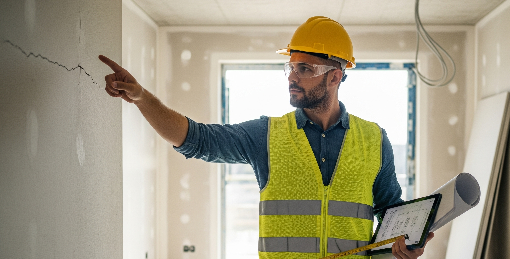
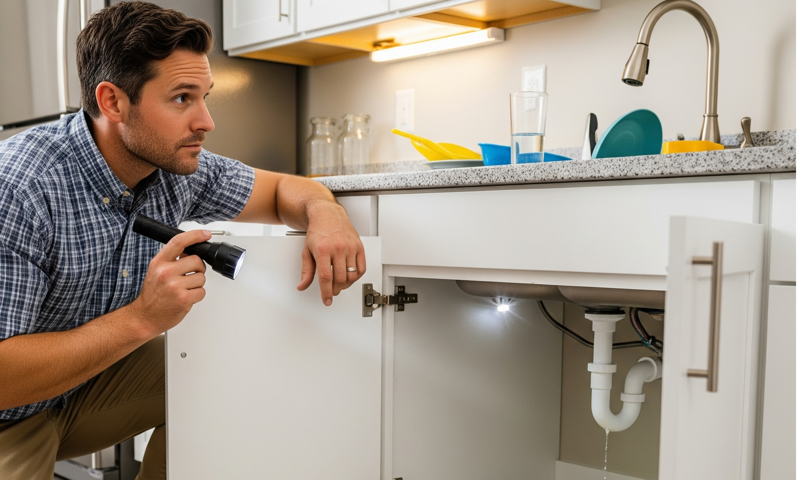

Por que a vistoria de entrega é essencial
Ao receber as chaves do seu novo lar, um misto de alegria e expectativa toma conta. No entanto, antes de se instalar completamente, um passo crucial garante a tranquilidade e a segurança do seu investimento: a vistoria de entrega de chaves.
Essa análise visual detalhada é mais do que um simples protocolo; é a sua oportunidade de documentar o estado real do imóvel no momento da entrega. Ao verificar minuciosamente cada cômodo, parede, piso, teto, portas, janelas e instalações aparentes, você garante que o que está sendo entregue corresponde ao que foi acordado no contrato, na planta e no memorial descritivo.
A importância da vistoria reside em prevenir futuras dores de cabeça. Ao identificar e registrar quaisquer desgastes, defeitos ou inconformidades antes de assinar o recebimento, você protege seus direitos como consumidor e evita que esses problemas sejam imputados a você posteriormente.
Em suma, a vistoria de entrega de chaves é um ato de responsabilidade e prevenção, essencial para que você possa desfrutar do seu novo espaço com a paz de espírito que ele merece.

Por que contratar um engenheiro para a vistoria
A vistoria de um apartamento novo, embora essencialmente visual, ganha uma dimensão de segurança e confiança quando conduzida por um engenheiro. A expertise técnica vai além do que o olhar leigo consegue perceber, garantindo que você receba um imóvel realmente em conformidade e seguro.
Conhecimento técnico aprofundado
Um engenheiro possui base para identificar problemas estruturais, falhas em instalações elétricas e hidráulicas, não conformidades de acabamento que podem indicar questões mais sérias e irregularidades frente às normas técnicas e ao memorial descritivo.
Identificação de defeitos ocultos
A análise conduzida por profissional sabe onde e como procurar por infiltrações, fissuras em pontos não aparentes, falhas de isolamento térmico ou acústico e outros vícios construtivos que comprometem conforto e durabilidade.
Verificação de conformidade com normas
O engenheiro atesta se a construção e os acabamentos estão de acordo com as normas vigentes (ex.: ABNT NBR 15575 — Desempenho) e com o memorial descritivo, assegurando qualidade e segurança.
Documentação robusta e confiável
Um laudo de vistoria elaborado por engenheiro tem peso técnico e jurídico superior. Ele consolida evidências (fotos, medições, testes) e fundamenta eventuais solicitações de correção junto à construtora. Quando aplicável, a ART — Anotação de Responsabilidade Técnica dá ainda mais formalidade às tratativas.
Segurança, tranquilidade e economia
Ter um profissional qualificado inspecionando seu futuro lar traz tranquilidade e evita gastos inesperados. A identificação precoce de problemas reduz retrabalhos e custos corretivos após a mudança — um investimento que se paga no médio e longo prazo.

Conclusão
Contratar um engenheiro para a vistoria de entrega não é um custo extra, mas um investimento na qualidade, segurança e valor do seu patrimônio. Você recebe um imóvel em conformidade com o contratado — e, se houver pendências, elas estarão formalmente documentadas para correção.
Referências (ABNT simplificado)
- ABNT. NBR 15575 — Edificações habitacionais: Desempenho. Rio de Janeiro: ABNT, s.d.
- ABNT. NBR 14037 — Manual de operação, uso e manutenção das edificações. Rio de Janeiro: ABNT, s.d.
- ABNT. NBR 5671 — Condomínios. Rio de Janeiro: ABNT, s.d.